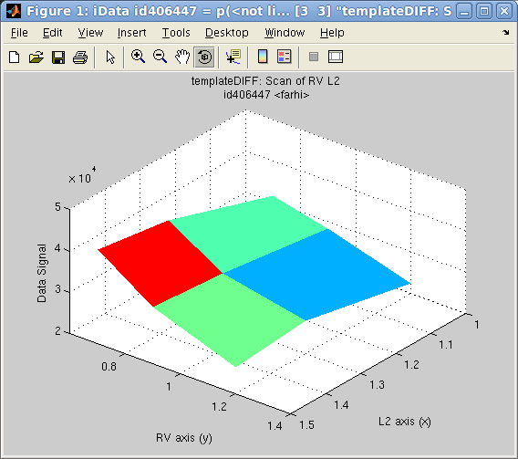

![McStas [www.mcstas.org]](images/mcstas.png "McStas [www.mcstas.org]")
>> results = iData('single_detector_file')which returns a single or an array of iData object(s), that you can plot with e.g. subplot.
>> results = iData('directory') % import everything in the directory, including sim files (files may imported more than once)
>> results = iData('scan_directory/mcstas.dat') % for scans
>> results = iData('scan_directory/mcstas.sim') % for all files from the directory, uniquely.
>> results(1).Parameters
NOTE: the 'mcstas'
routine was used up to iFit version 1.9.
It will be obsoleted in future versions, as the 'mccode'
solution below is more robust.
You may still used it, and get help for it with: '>>
help mcstas'.
The syntax for building a McCode (McStas for neutrons or McXtrace for X-rays)
instrument model is:
>> model = mccode('instrument'); % uses the given instrument file (*.instr)which compile the instrument, and create an iFunc model (in fact an iFunc_McCode flavour).
>> model = mccode('gui'); % lists all available instruments to select one
>> model = mccode(''); % pop-up a file selector to select an *.instr file
>> model = mccode('defaults'); % uses the templateDIFF instrument as example
model = mccode('gui')You may even assemble these models as iFunc arrays to iteratively perform series of simulations, or use arithmetic operations to combine models (see the iFunc documentation).
plot the model geometry in 3D.
evaluate the model using its current parameter values and settings. The returned data is an array for the selected or last Monitor value. Other monitors are available as iData objects in model.UserData.monitors
edit the instrument source code. Do not forget to save the file before closing the editor. If changes are done, the object is updated, and the instrument is re-compiled.
displays a table where you can change the parameter/configuration values. Instrument parameters (scalars) can be given as a single scalar, or a vector (for scans). The calculation starts when you close the table. To Cancel the computation, select the contextual menu (right mouse button) CANCEL item, or press Ctrl-C at the prompt. The resulting monitors are displayed when the simulation end.
create a full readable report as an HTML web page, including the instrument model view, results, and code.
and the following options:>> mccode('instrument', options)
| options.dir | directory where to store results, or set
automatically (string) ; the last simulation files are stored therein 'sim'. |
| options.ncount | number of neutron events per iteration, e.g. 1e6 (double). |
| options.mpi |
number of processors/cores to use with MPI
on localhost or cluster (integer) ; when MPI is available, and mpi options is not given, all cores are then used. Use options.mpi=1 for a serial calculation. |
| options.machines | file name containing the list of
machines/nodes to use (string), as often found in cluster
job schedulers. |
| options.seed | random number seed to use for each iteration (double) |
| options.gravitation | 0 or 1 to set gravitation handling in neutron propagation (boolean) |
| options.monitor | a single monitor name pattern to
read, or left empty for the last (string). The whole
monitors are available as iData objects in the model.UserData.monitors
field. Wildcard expression can be used. See below for more
advanced customisation. |
| options.mpirun | set the executable path to 'mpirun', or
automatically found when not set. |
| options.compile | 0 or 1 to force re-compilation of the executable. |
as a previous executable may be in the way, and block the generation of the new model.>> mccode('instrument', 'compile=1')
>> options.monitor='*Banana_Theta*; signal=plus(signal); signal=max(signal)/std(signal)^2;'The options.monitor can be given in a compact way if the file pattern and the expression are enclosed in single or double quotes, such as in:
>> model=mccode('templateDIFF', options)
>> results = feval(model); % return the monitor, using current/default parametersbut it may be more convenient to manipulate the model value as iData objects:
>> results = feval(model, parameters); % return the monitor as an array using guessed axes
>> results = feval(model, parameters, x,y,...); % return the monitor as an array, using specified axes
>> results = feval(model, parameters, nan); % return the raw monitor as an array
>> result = iData(model, parameters); % return monitor interpolated onto guessed axeswhere parameters is a structure, or string, or vector that holds parameter names and values, e.g.
>> result = iData(model, parameters, nan); % return raw monitor as an iData object
>> result = iData(model, parameters, x,y,...); % return monitor interpolated onto axes x,y,...
>> plot(result);
>> plot(model.UserData.monitors)
value = iData (methods,doc,plot,plot(log),values,more...) 2D object:
[Tag] [Dimension] [Title] [Last command] [Label/DisplayName]iD61442 [51 170] 'templateDIFF.instr McCode [... "signal"' iD61442=setalias(iD6... templateDI/templateDI...
model.UserData.monitors = array [5 1] iData (methods,doc,plot,plot(log),values,more...) object:
Index [Tag] [Dimension] [Title] [Last command] [Label/DisplayName]
1 iD61449 [40 40] 'mccode.sim McCode sim file ... "Data ..."' iD61449=load(iData,'... Diff_Mono_XY
2 iD61457 [40 1] 'mccode.sim McCode sim file ... "Inten..."' iD61457=load(iData,'... Diff_Mono_Lambda
3 iD61459 [40 1] 'mccode.sim McCode sim file ... "Inten..."' iD61459=load(iData,'... Diff_Sample_Lambda
4 iD61461 [340 1] 'mccode.sim McCode sim file ... "Inten..."' iD61461=load(iData,'... Diff_BananaTheta
5 iD61463 [25 170] 'mccode.sim McCode sim file ... "Data ..."' iD61463=load(iData,'... Diff_BananaPSD
model.UserData.Parameters_Constant.powder='Na2Ca3Al2F14.laz'The unspecified instrument parameters are used with their default values (when defined).
>> value.ParametersUsual data analysis (display, mathematics, fit, export) can be performed (refer to the iFit and iData documentation).
>> get(model.UserData.monitors(1),'Parameters')
>> model = mccode('defaults')
>> plot(model);
which open a geometrical representation of the instrument. The
current model parameters are used. It can be given as well a set
of parameter values:>> plot(model, parameters);
An empty parameter argument requests to use the current value.
In addition, this routine returns the list of components, and
can be given more options (3rd argument), as 'html','png',
and 'x3d'.>> plot(model, [], 'html png x3d');
to generate hardcopy files and geometry rendering. The generated
filenames are then displayed.>> model.UserDataand especially the instrument_info and instrument_source, which you can view with e.g:
ans =
instrument_source: [1x7011 char]
instrument_executable: [1299344x1 double]
instrument_exe: 'templateDIFF.out'
instrument_info: [1x960 char]
options: [1x1 struct]
Parameters: [1x1 struct]
Parameters_Constant: [1x1 struct]
monitors: [5x1 iData]
>> TextEdit(model.UserData.instrument_source)
>> TextEdit(model.UserData.instrument_info)
which can be directly plotted with e.g.>> integral = sum(scan, 0);
>> plot(integral); % simple plot, or median surface for multidimensional scansYou may as well concatenate the scan steps into a higher dimensionality volume using e.g. the iData/cat method:
>> scatter3(integral); % coloured points (possibly in 2D,3D)
>> plot3(integral); % coloured lines in 2D, or volume for multidimensional scans
>> slice(integral); % only for 3D scans, use slice-o-matic for volume inspection
>> catenated = cat(scan, 2);
Multidimensional scans are also possible. In the following example, we launch a quick 2D scan with parameters specified as a structure:
>> model = mccode('templateDIFF','monitor=Diff_BananaTheta');Then we may plot, as a 2D surface, the integral value for the model value monitor:
>> scan = iData(model, struct('RV',[0.7 0.9 1.2],'L2',[1 1.3 1.5]), nan);
>> plot(iData(sum(scan,0)));You may look at the instrument parameters used for the scans, e.g.
>> get(scan,'Parameters.RV')Warning: Beware of the number of iterations required to scan large dimensionality spaces. In practice you should avoid spaces above 2 or 3 scanned parameters. Exceeding this will undoubtedly require very long computation times, and large memory storage.
>> best_parameters = fmax(model); % maximize with the current/default parametersThe parameters, as a vector, string or named structure, are initiated to their starting value, from which the optimization proceeds. An empty value requests to use the current/default values. Only numerical parameters can be optimized. Also, it is highly encouraged to use bounded parameters (that is define constraints, see below), else the optimizer can get lost, produce un-meaningful results, or return NaN parameter values.
>> best_parameters = fmax(model, parameters); % maximize with given initial parameters
>> best_parameters = fmax(model, parameters, options);
as well as any other optimizer configuration fields such as>> best_parameters = fmax(model, parameters, options, x, y, ...);
and in particular you should probably use:>> best_parameters = fmax(model, parameters, options, nan); % use raw monitors
The optimization returns the best parameter guess, as well as the
monitor value for this solution.>> model = mccode('templateDIFF','monitor=*Theta*'); % monitor contains 'Theta'where output stores most of the optimization process data, including uncertainty on the best parameter values, output.parsHistoryUncertainty and output.parsHessianUncertainty.
>> fix(model, 'all'); % fix all but RV L2
>> model.RV='free'; model.RV=[0.5 0.8 1.5]; % set RV bounds and value in a single assignment
>> model.L2='free'; model.L2=[1 3 4];
>> [parameters, fval, status, output]=fmax(model,[], 'optimizer=fminimfil; OutputFcn=fminplot', nan);
>> model = mccode('templateDIFF','monitor=*Theta*'); % monitor contains 'Theta'You can then plot the monitor(s) for the optimised parameters with:
>> fix(model, 'all'); % fix all
>> model.RV='free'; model.RV=[0.5 1 1.5]; % set RV free, bounds and value in a single assignment
>> [parameters, fval, status, output]=fmax(model,[], ...
'optimizer=fminpso; OutputFcn=fminplot;TolFun =5%;TolX=5%;ncount=1e5;MaxFunEvals=100', nan);
ans=
0.8621

{kind=link}
{kind=link}
{kind=link}
{kind=link}